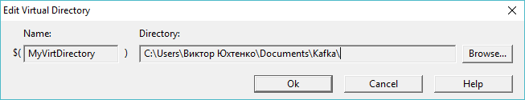

Copyright (c) Prolog Developemnt Center SPb
WorkSpace Manager
Версия 2.0Создание и редактирование WSM-переменных
Пользователь
может использовать как абсолютную, так и относительную адресацию
файлов в дисковом пространстве.
Относительная адресация аналогична
принятой в системе Visual Prolog. Предварительно определяется Имя
маршрута к директории (имя и связанный с ним маршрут) и это имя используется в качестве префикса в
маршруте файла в виде $(Имя). Такая пременная называется здесь WSM-переменной.
Относительная
адресация позволяет переносить рабочее пространство с одного компьютера
на другой, переопределив лишь значение WSM-переменной.
Пользователь
может определить неограниченное число WSM-переменных и
редактировать их расположение на данном компьютере.
На следующем рисунке показан редактор WSM-переменных.

Как видно, редактор WSM-переменных находится во вкладке WSM-Variables диалога WorkSpace Settings который вызывается по кнопке Options панели управления.
Для создания новой WSM-переменной- Вызвать диалог WorkSpace Settings кнопкой Options
- Выбрать вкладку WSM-Variables
- Нажать кнопку New
Появляется окно определения WSM-переменной

Поле Name является обычным редактором, поле Directory - редактируется либо его значение устанавливается при выборе директории по кнопке Browse.- Выбрать директорию и назвать ее удобным именем.
Значение WSM-переменной может быть изменено по кнопке Edit (вызывается то же окно определения WSM-переменной) и удалено по кнопке Delete.
Примечание: для файлов с расширением .vipprj переменная VipDir определяет место расположения системы программировани Visual Prolog.
Использование файла WSM-переменных
В
некоторых случаях необходимо оперативно переключаться с одной версии
проектов на другую, которые используют одни и те же WSM-переменные, но
директории, которые им соответствуют, располагаются в разных местах
дискового пространства.
В таких случаях можно хранить WSF-переменные в специальном файле с расширением .vars.
Формат данных такого файла в качестве примера приведен в файле SpbRSolutions/SpbVipTools/UserWS/vipXX.vars.
Для применения файла WSM-переменных следует в поле WS Variable File ввести полное имя файла или выбрать его с использованием кнопки .../Browse.
Для отмены использования файла WSM-переменных следует очистить поле WS Variable File кнопкой .../Clear.
Примечание: В системе Visual Prolog, начиная с версии 9005 помещение файла такого же формата с именем ide.vars в директорию [Visual Prolog]\appData приведет к загрузке IDE-переменных из этого файла. Это позволяет синхронизировать адресацию приложения WorkSpaceManager с системой Visual Prolog
Создание файла WSM-переменных
Для создания нового файла WSM-переменных следует:
- убедиться в том, что поле WS Variable File пусто;
- создать спиcок WSM-переменных, соответствующий применению;
- кнопкой .../Browse вызвать файловый диалог и выбрать место размещения файла и его имя завершить успешно работу диалога.
Корректировка файла WSM-переменных
Для корректировки списка в файле WSM-переменных следует:
- загрузить содержимое файла кнопкой .../Browse;
- отредактировать список переменных;
- по кнопке .../Browse выбрать тот же файл.